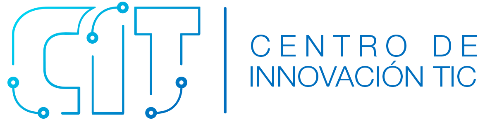
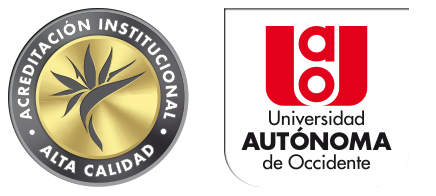

Para una mejor experiencia te recomendamos usar un micrófono. Conecta el micrófono, recarga la página y acepta la solicitud en el navegador.
Continuar de todos modos
Cronología del uso de las tecnologías con propósitos educativos en la UAO
LAS TIC EN MOVIMIENTO
El actual “Centro de Innovación TIC” ha tenido un devenir en el tiempo que da cuenta de los retos y compromisos que institucionalmente se han asumido con la educación de calidad mediada por TIC, para dar respuesta a los desafíos de la sociedad de la información y del conocimiento.
SOPLA O HAZ CLICK PARA CONTINUAR CON LA HISTORIA

 

Grupos
B-learning
Estudiantes
E-learning

